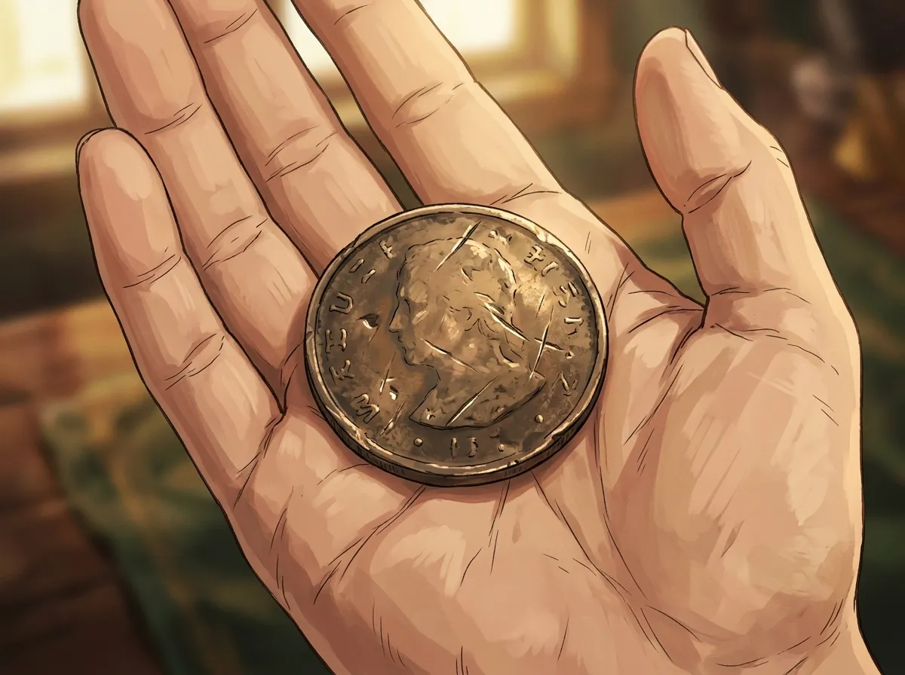
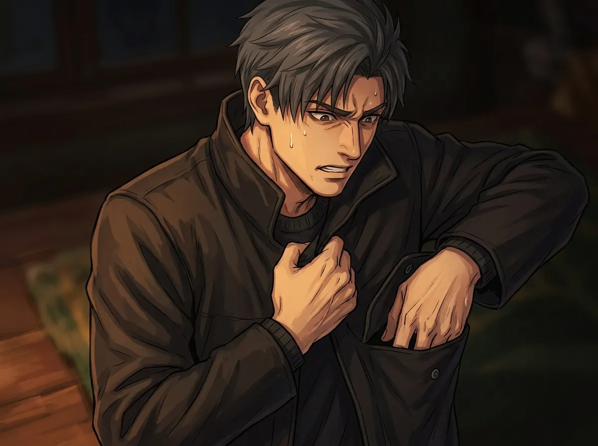
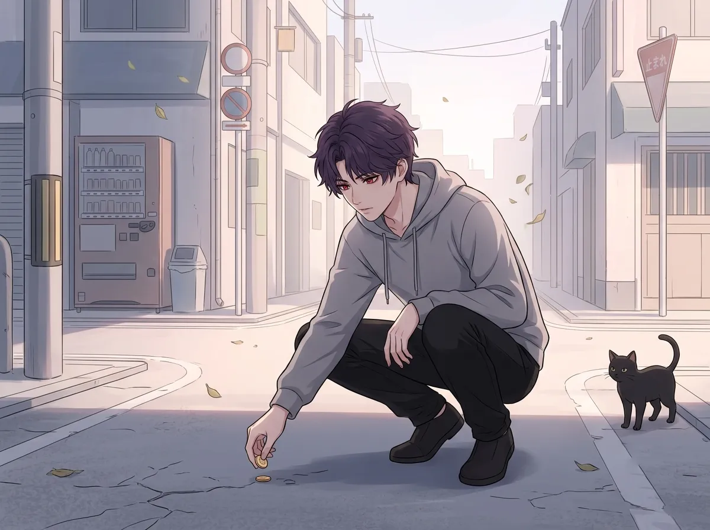
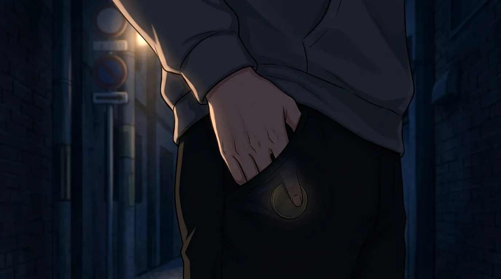
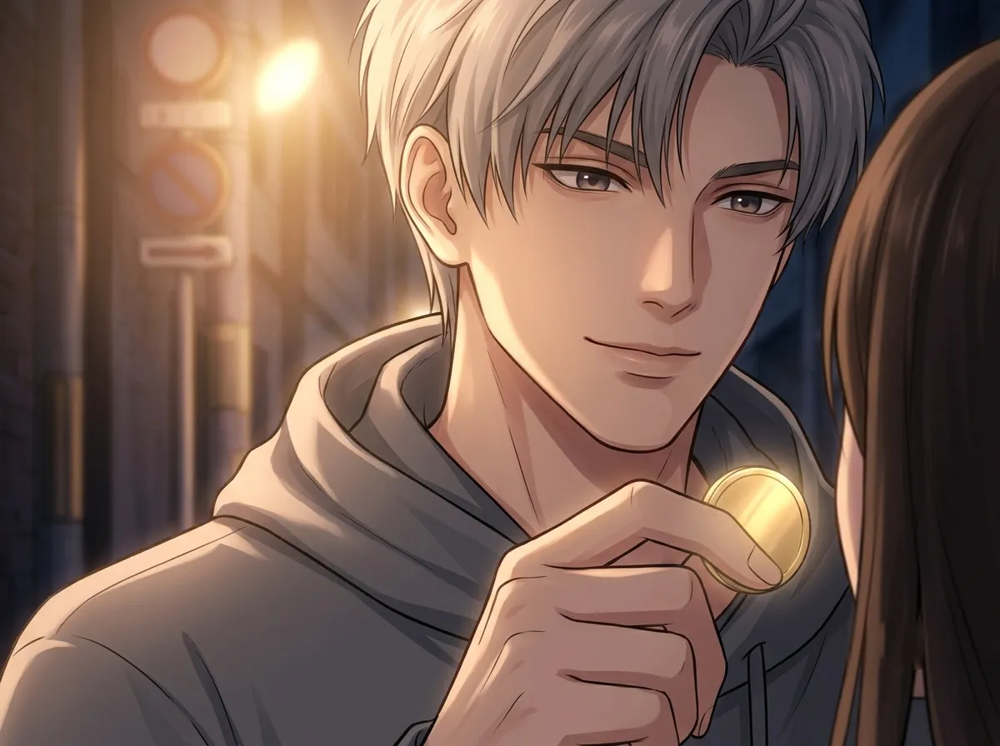

It was worthless. He kept it anyway. No one knows why.
He had a coin. An old coin. A worn coin. A coin that had been in his pocket for longer than he could remember.
It was worthless. Not valuable. Not rare. Not anything. Just a coin. Old and dull and scratched and utterly ordinary.
He kept it anyway.
He never spent it. He never showed it to anyone. He never talked about it. He just kept it. In his pocket. Every day. For years.
No one knew why. He didn't know if he knew why.
This is the story of that coin.

It was a coin. It was old. It was worn smooth from years of being held and turned and rubbed between his fingers.
He didn't know what year it was from. He didn't know what country it was from. He didn't know if it was real. He didn't care.
It was his. That was all that mattered.
He found it a long time ago. He didn't remember where. He didn't remember how. He just remembered picking it up. Holding it. Putting it in his pocket. Never taking it out.
He had carried it through everything. Through the throne. Through the N109 Zone. Through every fight. Every night. Every silence.
He had things that were worth more. Gold. Power. A kingdom. He had things that could buy anything. He had things that could destroy anything.
He kept a worthless coin. A coin that couldn't buy anything. A coin that couldn't do anything. A coin that just sat in his pocket. And stayed.
He didn't know why it mattered. He only knew that it did. He only knew that if he lost it, something would be missing. Something he couldn't name.

There was a moment. A brief moment. A moment when he reached into his pocket and the coin wasn't there.
He felt nothing. Just emptiness. Just fabric. Just nothing.
He didn't panic. He didn't show anything. He just stood there. Frozen. For a second. For longer than a second. He felt something he hadn't felt in a long time. Something he had forgotten he could feel.
Then he found it. In his other pocket. He had moved it. He didn't remember moving it. He just had.
He put it back. In the right pocket. And he didn't move it again.
He almost lost it. A worthless coin. A piece of metal that meant nothing. He almost lost it and he felt something he hadn't felt in years.
Fear. Not the fear of death. Not the fear of loss. Not the fear of anything that mattered. The fear of losing something that was his. The fear of losing something that had stayed.
He didn't know why it mattered. He only knew that it did. He only knew that he never wanted to feel that again.

He found it a long time ago. Before the throne. Before N109. Before everything.
He was young. He was lost. He was alone. He was standing on a street corner, not knowing where to go, not knowing what to do, not knowing who to be.
And he saw it. A coin. On the ground. Glinting in the light. Small and ordinary and completely unremarkable.
He picked it up. He didn't know why. He just did. He held it in his hand. He felt its weight. He put it in his pocket.
He never took it out. He never spent it. He never told anyone where it came from.
He just kept it. For all the years that followed. Through everything.
He found it on a street corner. A long time ago. Before he was anyone. Before he was anything.
He picked it up. He didn't know why. He just did. He held it. He kept it. He never let it go.
He didn't know that the coin would be the only thing that stayed with him. The only thing that never left. The only thing that saw him become who he is today.
He didn't know that a worthless coin would become the most important thing he owned.

He shares everything. His throne room. His silence. His time. His attention. He lets people in. He lets them stay. He lets them see him.
He never shares the coin.
No one has touched it. No one has held it. No one has even seen it clearly. He keeps it in his pocket. He takes it out when he's alone. He holds it. He looks at it. He puts it back.
He doesn't know why he keeps it to himself. He doesn't know why he can't share it. He only knows that it's the only thing he has that is completely his. Completely private. Completely untouchable.
It is the only thing that no one can take away.
He shares everything. His power. His presence. His time. He shares everything except the coin.
The coin is his. His only. His private. His untouchable. The one thing no one has ever seen. The one thing no one has ever touched. The one thing no one has ever asked about and received an answer.
He doesn't know why he keeps it to himself. He only knows that it's the only thing that is completely his.

One day, someone saw it.
Just a glimpse. Just a flash. Just the edge of it in his hand when he reached for something else.
She saw it. She didn't say anything. She just looked at him. He looked at her. Neither of them spoke.
He didn't pull it away. He didn't hide it. He didn't do anything.
He didn't know why. He had never let anyone see it before. He had never let anyone know it existed. But she saw it, and he didn't move. He didn't stop her. He didn't close his hand.
She looked at the coin. She looked at him. She didn't ask what it was. She didn't ask where it came from. She didn't ask why he kept it.
She just looked. And then she looked away.
She saw it. Just a glimpse. Just a flash. She saw the coin that no one had ever seen.
He didn't pull it away. He didn't hide it. He didn't do anything.
She didn't ask. She didn't push. She just looked. And then she looked away.
He didn't know why he let her see it. He didn't know why he didn't hide it. He only knew that for the first time, he wanted someone to know. He wanted someone to know about the coin. He wanted someone to know about the thing he carried. He wanted someone to know about him.
Sylus had a coin. A worthless coin. An old coin. A coin he found a long time ago when he was no one.
He kept it. Through everything. Through the throne. Through N109. Through every fight. Every night. Every silence.
He never spent it. He never showed it to anyone. He never told anyone where it came from. He just kept it. In his pocket. Every day. For years.
It was the only thing that stayed. The only thing that never left. The only thing that saw him become who he is today.
He still has it. He will always have it. It is his. His only. His private. His untouchable.
A worthless coin. The most important thing he owns.